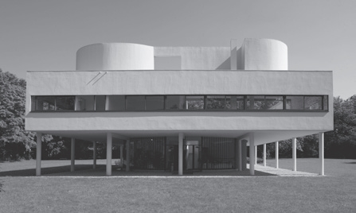
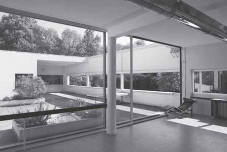
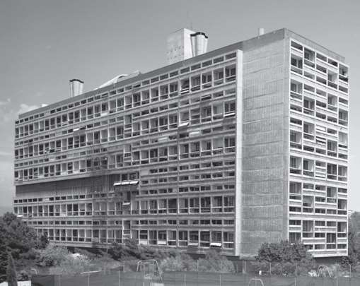
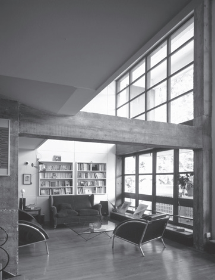
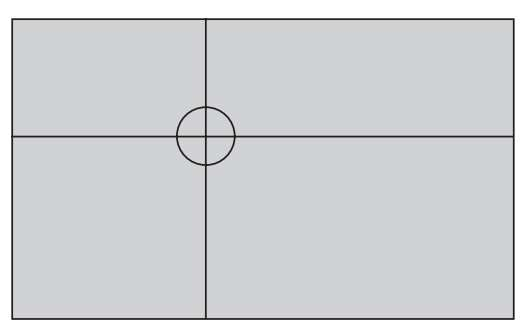
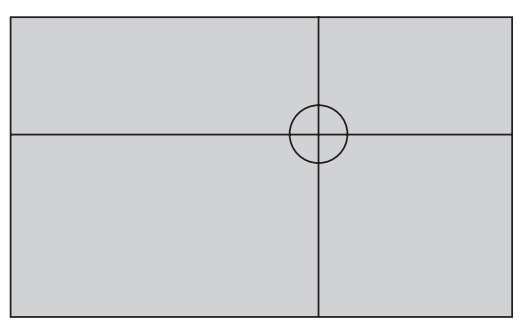
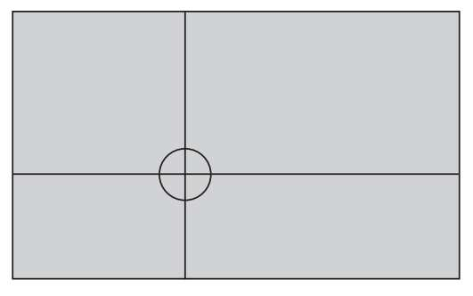
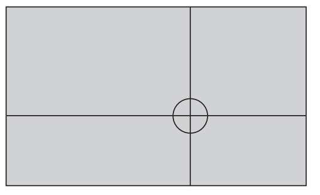

印刷机的使用带来了印刷术。当然，我们所讲的印刷术来自设计史上不同类型的印刷机，其中就包括卢卡·帕乔利、列奥纳多·达·芬奇、丢勒等人设计的机器。他们的一部分贡献是运用了比例原则，比例原则主导着他们的其他活动。丢勒在制作《马克西米连一世祈祷书》（Prayer Book of Maximilian I）的过程中将黄金比例同时用到了文本和彩饰中。
勒·柯布西耶设计中的黄金比例
萨伏伊别墅位于巴黎近郊的普瓦西，是勒·柯布西耶使用黄金比例进行建筑设计的代表作，不论人们在建筑内部还是外部都能够观察到黄金比例。然而，为了最大限度地体现功能设计和审美效果，勒·柯布西耶在马赛公寓中应用的黄金比例最为频繁。


萨伏伊别墅现为博物馆、法国文物保护单位。上图为别墅后立面图，下图为通往中央平台的起居室。


马赛公寓的外部视图和内部视图。建筑内的全部空间都以模度系统中的比例为基础。
然而甚至在谷登堡之前，书籍的尺寸规格就近似于黄金比例。1:1.6（也可以表示为5:8）被认为是最和谐的书籍尺寸比例，但由于这种比例在做书裁纸时会造成浪费，所以这种比例通常用于售价较高的精装本。更常见的规格为1:1.4（也可以表示为5:7）。
从今天的数字时代来看，尽管所有不同的规格看起来都像是毫不起眼的小矛盾，但我们却不能因此而将其忘记。在今天我们仍然将黄金比例用于网页设计。此外，苹果公司的音乐播放器iPod作为当代设计的杰出代表，它的经典外形也是按照黄金矩形的尺寸量身打造的。
1955年，某知名香烟品牌在改变自身形象的过程中强化了烟盒的设计，自此以后，烟盒的形状也变成了黄金矩形。事实上，把烟盒的外形改为黄金矩形并不是为了符合审美，而是让烟盒更加实用。今天，人们巧妙地利用折叠设计为烟盒增加了一个盒盖。因此人们将这种烟盒称为“翻盖盒”。这种长方体烟盒的最大矩形面为8.5厘米×5厘米，邻边之比为黄金比例。很快，世界各地的香烟品牌都争相模仿这种烟盒。
在服装设计中，黄金比例有着某些不同寻常的用途。例如某个美国牛仔裤品牌，它让裤子前侧口袋的曲线以及后侧口袋的尺寸都成黄金比例，就连臀部的回针和内侧的缝合也用到了黄金比例。
我们在运动场中也可以观察到黄金比例。大多数足球场都是长宽比接近1.52的矩形。但其中也有例外，皇家马德里队的球场就特别与众不同。该球场的长宽比为1.606，几乎就是一个黄金矩形（场地尺寸为106米×66米）。
斐波那契的青蛙
2008年在西班牙城市萨拉戈萨举办的世界博览会上，艺术家安杰尔·阿鲁迪和费尔南多·巴约在展览场地各处放置了610只小青蛙。610是斐波那契数列中的一项。在会场中心，两人将一个混凝土立方体结构嵌入地面。这件作品通过黄金比例将立方体与圆结合在一起。这件作品被命名为《小青蛙》。
连环画画家同样在绘画中使用黄金比例来定位焦点，但是他们通常并不承认自己是有意识地这样去做。如果我们将黄金比例应用于5厘米×3厘米的矩形连环画中，便会得到5厘米:1.618=3.09厘米，3厘米:1.618=1.85厘米。这两个结果能够以四种不同的方式出现在黄金矩形中：




我们可以在许多连环画家的作品中看到这种定位图像的方法。
与音乐相关的设计也离不开黄金比例。著名的小提琴制造师安东尼奥·斯特拉迪瓦里（1644—1737）会非常小心地根据黄金比例为小提琴的F孔定位。尽管这位意大利人的工作极其缜密，但没有证据表明按照黄金比例定位F孔就会提高音质。而对于作曲家来说，德彪西和巴托克似乎都有意在各自的总谱中使用黄金比例。